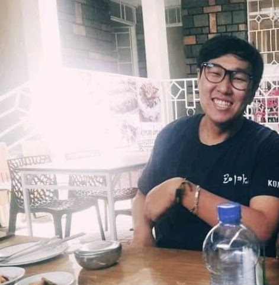

01Policy report
Strategies and Key Tasks for Promoting AI Industry in Jeonju
Jeonju Research Institute
AI & regional development
I am interested in how AI and algorithm-based online media shape society. As a social scientist, I am exploring different methodologies and developing my skills in big data and AI to study these changes.
My research also draws on around four and a half years of experience in sustainability and social contribution, including CSR, ESG, and international development in Korea and abroad.
At the Jeonju Research Institute, I work on regional economic strategies, social policy, and population issues.

Jeonju Research Institute
AI & regional development
Jeonju Research Institute
Population & regional policy
Jeonju Research Institute
Industry & economic strategy
Additional work at Jeonju Research Institute includes two reports on population and culture.
Sungkyunkwan University
— Present
Researcher · Economic and Social Research Division
Research on regional economic strategies, social and population policies for Jeonju.
—
Assistant Researcher
Researched ESG trends in domestic and overseas corporations and developed models for detecting online hate speech.
—
Coordinator · Gang-seo, Seoul
Managed housing repair support projects and conducted qualitative field research on urban regeneration.
—
Project Manager · KUCSS
Social contribution projects with Korea Hydro & Nuclear Power and Korea Western Power.
—
Volunteer · KOICA, Ethiopia
Korean language instructor at Addis Ababa Institute of Technology, providing cultural and Korean language education.
Sociology
Double major in Social Innovation Convergence
Law